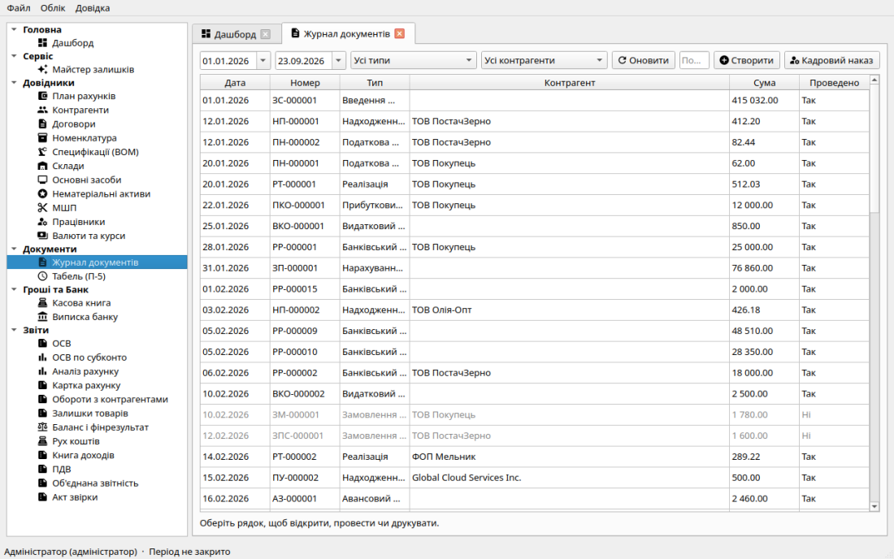

Керівництво користувача: З чого почати
Фінік — десктопний бухгалтерський облік для малого й середнього
бізнесу в Україні (локальна SQLite). Суми в копійках, подвійний запис,
проведені документи змінюються лише через «Зняти проведення» у відкритому
періоді.
Для кого: одне робоче місце бухгалтера (локальний файл SQLite), не
клієнт–сервер. Щоденні книги — так. XML податкових накладних підписуйте в
M.E.doc / Кабінеті ДПС. XML декларацій (ПДВ, 4ДФ, ЄП) — каркас для
перевірки, не файл для подачі. Не відкривайте ту саму базу з двох
комп'ютерів одночасно.

Головне вікно системи: ліворуч — навігаційна панель розділів, праворуч
— робоча область журналу з фільтрами та панеллю дій, унизу — рядок стану
(активний користувач, роль, дата закритого періоду).
Анатомія інтерфейсу
Інтерфейс програми складається з чотирьох основних зон:
-
Головне меню:
-
Файл: Глобальний пошук (Ctrl+F),
Налаштування програми, Зміна пароля,
Резервна копія, Відновлення з копії,
Вихід.
-
Облік: Картка підприємства,
Закритий період / Фінрезультат,
Користувачі та безпека, Журнал дій
(аудит), Завантажити Демо-дані.
- Довідка: Зміст довідки (F1), Про програму, Про Qt.
-
Ліва навігаційна панель (20 розділів обліку):
-
Дашборд: Робочий стіл (Дашборд).
-
Довідники: План рахунків,
Контрагенти,
Склади,
Номенклатура,
Специфікації (BOM),
Валюти та курси,
Основні засоби,
Нематеріальні активи,
МШП (рахунок 22),
Працівники.
-
Первинні документи:
Журнал операцій (усі документи,
створення, проведення, механізм «На підставі»).
-
Звітність та книги:
ОСВ (Оборотно-сальдова відомість),
Картка рахунку,
Обороти контрагента,
Склад (залишки),
Касова книга (301),
Виписка банку (311),
Баланс та фінрезультати,
Книга доходів ЄП,
Відомість ПДВ,
Акт звірки.
-
Робоча область: відображає вибраний журнал, форму редагування або
таблицю звіту. Усі відкриті сторінки розміщуються у зручних
вкладках (табах) з іконками, що дозволяє швидко перемикатись між
ними. Багато таблиць мають контекстне меню (клік правою кнопкою
миші), яке містить команди з інтуїтивними іконками (Відкрити, Копіювати,
Провести, Видалити тощо).
-
Рядок стану (внизу вікна): вказує поточного користувача, рівень
доступу (Адміністратор / Бухгалтер / Касир / Спостерігач) та дату, до
якої заблоковано зміни періоду.
Перші кроки: як розпочати роботу
-
Ознайомлення: якщо ви тільки встановили програму на порожню базу
даних, виберіть пункт меню Облік → Демо-дані. Система автоматично
наповнить базу демонстраційними контрагентами, товарами, касовими і
банківськими операціями, основними засобами та нарахуванням зарплати.
-
Налаштування підприємства: відкрийте
Картку підприємства. Введіть офіційну назву,
код ЄДРПОУ, банківські реквізити (UA IBAN та МФО), посадових осіб
(керівника, бухгалтера, касира) для друкованих форм, виберіть систему
оподаткування та статус платника ПДВ.
-
Введення початкових залишків: якщо облік переноситься з іншої
програми, створіть документ «Введення залишків» у
Журналі документів. Рахунок
00 підставляється автоматично, забезпечуючи нульовий підсумок
балансу.
-
Щоденні господарські операції:
-
Контроль і закриття місяця: щомісяця перевіряйте ОСВ,
залишки на складі, формуйте Баланс і розраховуйте фінансовий
результат у розділі Закритий період.
-
Безпека: створіть облікові записи для персоналу з відповідними
ролями (Користувачі та безпека) та регулярно
виконуйте Резервне копіювання бази даних.
Гарячі клавіші для швидкої роботи:
F1 — виклик контекстної довідки з будь-якого вікна або
діалогу.
Ctrl+F —
глобальний пошук за номером
документа, кодом ЄДРПОУ, ПІБ співробітника, назвою товару або сумою.
Enter /
Подвійний клік — відкрити документ чи запис
довідника для перегляду/редагування.
Delete — видалити непроведений документ або запис (доступно
бухгалтеру й адміністратору).
Сирці програми й гайд для розробника (C++, проведення, ПДВ, зарплата) —
у репозиторії: docs/DEVELOPER_GUIDE.md.
Готовий пакет без збірки: scripts/package.sh дає .deb
і .tar.gz; база лишається в ~/.local/share/Finik/Finik.